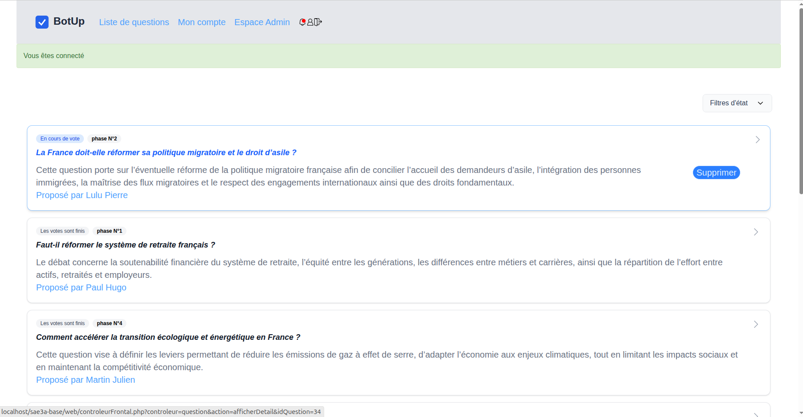
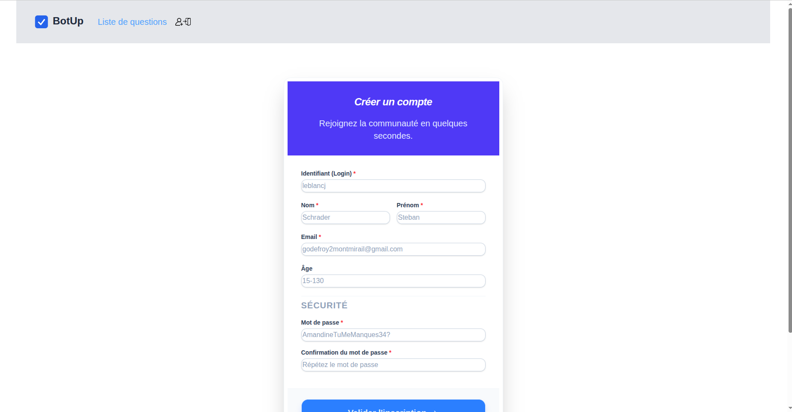
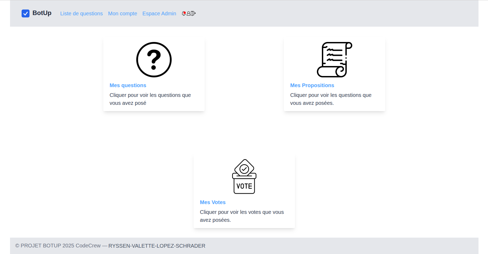
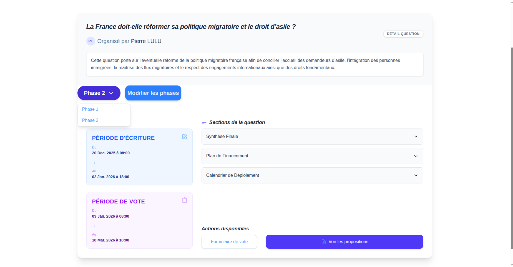
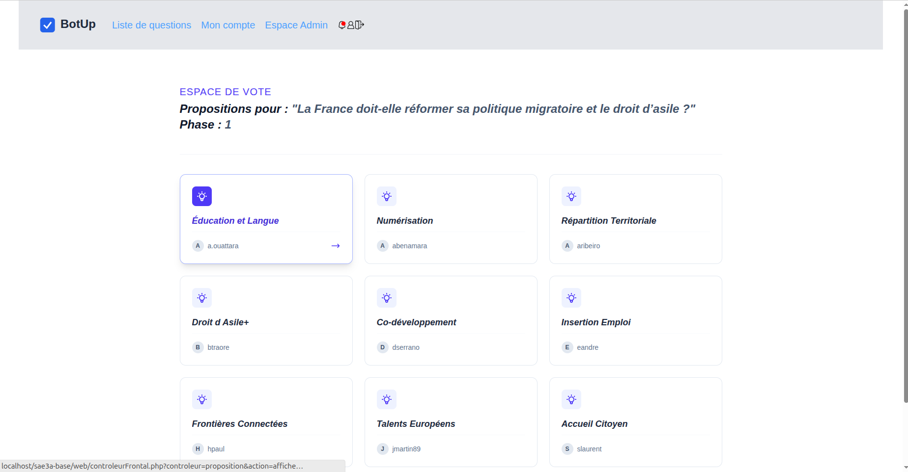
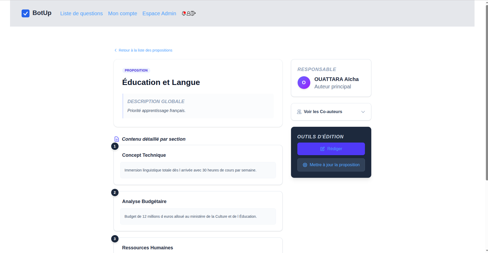

Site de vote en ligne
Académique

Contexte du projet
Ce projet a été réalisé dans le cadre du semestre 2 du BUT Informatique, en équipe de quatre étudiants, sur une durée d’environ trois mois.
L’objectif était de répondre à une demande client fictive en concevant une application web complète permettant de gérer un système de vote en ligne : création de questionnaires, gestion des propositions, participation des utilisateurs et consultation des résultats.
Le projet comportait plusieurs contraintes techniques et organisationnelles :
- respect d’une architecture MVC pour garantir la maintenabilité du code
- utilisation de PHP pour la logique serveur et l’accès aux données
- conception d’une base de données relationnelle avec contraintes d’intégrité
- mise en place de triggers SQL pour automatiser certaines vérifications
- implémentation d’un système d’authentification sécurisé avec gestion des rôles (administrateur, utilisateur…) et contrôle des accès aux fonctionnalités
- développement d’une interface en HTML/CSS avec quelques interactions en JavaScript
Nous avons travaillé en suivant une méthodologie Agile (Scrum), avec 4 sprints, incluant des réunions de suivi, des revues avec le client et une organisation collaborative des tâches.
Contribution personnelle
J’ai participé activement à plusieurs aspects du projet, à la fois techniques et organisationnels.
Sur le plan technique, j’ai contribué à la conception de la base de données, en définissant les différentes entités et leurs relations, ainsi qu’à la mise en place de contraintes d’intégrité et de triggers SQL afin de garantir la cohérence des données.
J’ai également développé plusieurs fonctionnalités liées à la gestion des votes (questions, propositions, réponses), en prenant en compte l’ensemble de leur cycle de vie (création, modification, suppression). J’ai aussi contribué à la mise en place du système d’authentification et du contrôle des accès, en veillant à ce que les utilisateurs puissent uniquement accéder aux fonctionnalités correspondant à leur rôle.
Sur le plan organisationnel, j’ai eu l’occasion d’occuper le rôle de Scrum Master lors d’un sprint, en facilitant la communication au sein de l’équipe et en veillant au bon déroulement du processus Agile. J’ai aussi participé à l’accompagnement du Product Owner, notamment dans la formulation des besoins et des questions à poser au client, afin de mieux comprendre les attentes du projet.
Enfin, j’ai contribué à la préparation des revues de sprint, en réalisant des supports de présentation pour exposer l’avancement du projet et les fonctionnalités développées.
Ce que j’ai appris
Ce projet m’a permis de consolider et d’approfondir plusieurs compétences essentielles en informatique.
Sur le plan technique, j’ai renforcé mes compétences en développement web avec PHP, ainsi qu’en programmation orientée objet et en structuration d’une application selon une architecture MVC. J’ai également appris à concevoir une base de données cohérente et fiable, en intégrant des contraintes d’intégrité et en utilisant des triggers pour automatiser certains traitements.
La mise en place d’un système d’authentification avec gestion des rôles m’a permis de mieux comprendre les enjeux liés à la sécurisation des accès et des données, ainsi que l’importance de contrôler précisément les droits des utilisateurs dans une application.
Le projet m’a aussi amené à porter une attention particulière à la qualité du code, à son organisation et à sa maintenabilité, ainsi qu’à la validation des fonctionnalités par des phases de test régulières.
D’un point de vue méthodologique, travailler en Scrum m’a permis de mieux comprendre comment formaliser les besoins d’un client, organiser le travail en équipe et suivre l’avancement d’un projet à travers des sprints. Le rôle de Scrum Master m’a également aidé à développer mes compétences en communication, coordination et gestion d’équipe.
Enfin, cette expérience m’a sensibilisé à l’importance de la collaboration dans un projet informatique, ainsi qu’à la nécessité de s’adapter aux contraintes techniques et organisationnelles pour livrer une application fonctionnelle dans les délais.
Traces du projet
Accéder au site de vote en ligne




